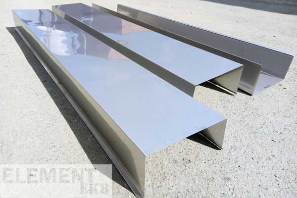
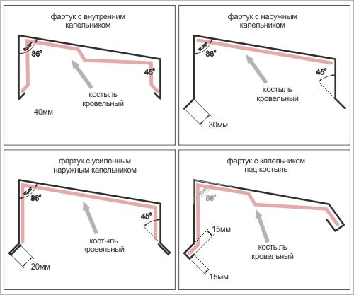

<section class="section">
    <div class="container">
        <div class="section__aside">
            <div class="commodity">
                <h2 class="section__title">Парапеты оцинкованные изготовление</h2>
                <div class="commodity__header">
                    
                    <div class="commodity__content">
                        <ol>
                            <li>Виды оцинкованных парапетов;</li>
                            <li>Фартук с кровельным костылём;</li>
                            <li>Оцинкованный парапет с фальцем;</li>
                            <li>Как не нужно делать;</li>
                            <li>Цена парапетов в Екатеринбурге;</li>
                            <li>Видео изготовления оцинкованных парапетов.</li>
                        </ol>
                    </div>
                </div>
                <div class="commodity__main">
                    <p class="commodity__text">Наша фирма оказывает услуги по изготовлению и монтажу оцинкованных фартуков на парапеты кровли.</p>
                    <p class="commodity__text">В основном мы работаем в Екатеринбурге и Свердловской области, но заказы на изготовление осуществляем по всему Уральскому региону.</p>
                    <p class="commodity__text">Мы производим оцинкованные фартуки с фальцевым соединением и без фальца, самой простой формы и сложной с дополнительными рёбрами жёсткости.</p>

                    <div class="commodity__slider"></div>

                    <p class="commodity__text">Услуги гибки мы оказываем по чертежам заказчика, но есть основные типы профиля, которые наиболее хорошо зарекомендовали себя при устройстве парапетов кровли.</p>
                    <p class="commodity__text">Ниже вы можете ознакомиться со схематичным изображением этих профилей. Все размеры и углы могут быть изменены под Ваши потребности.</p>

                    <div class="commodity__info">
                        <h3 class="commodity__subtitle">Самые распространенные виды оцинкованных парапетов</h3>
                        <div class="commodity__illustration">
                            
                            <p class="commodity__description">На схеме изображены несколько наиболее распространенных типов парапетов с контурами кровельных костылей, подходящих под такой профиль.</p>
                        </div>
                    </div>

                    <p class="commodity__text">Услуги гибки мы оказываем по чертежам заказчика, но есть основные типы профиля, которые наиболее хорошо зарекомендовали себя при устройстве парапетов кровли.</p>

                    <p class="commodity__text">Ниже вы можете ознакомиться со схематичным изображением этих профилей. Все размеры и углы могут быть изменены под Ваши потребности.</p>

                    <p class="commodity__text">Услуги гибки мы оказываем по чертежам заказчика, но есть основные типы профиля, которые наиболее хорошо зарекомендовали себя при устройстве парапетов кровли.</p>

                    <div class="commodity__info">
                        <h3 class="commodity__subtitle">Самые распространенные виды оцинкованных парапетов</h3>
                        <div class="commodity__illustration">
                            <iframe width="560" height="315" src="https://www.youtube.com/embed/GJVDKeBAU9s" title="YouTube video player" frameborder="0" allow="accelerometer; autoplay; clipboard-write; encrypted-media; gyroscope; picture-in-picture" allowfullscreen></iframe>
                        </div>
                    </div>
                </div>
            </div>

            <aside class="aside">
                <div class="aside__content">
                    <h2 class="aside__title">Производственный участок:</h2>
                    <p class="aside__text">Контактное лицо: Камальдинов Артур Газнавеевич</p>
                    <p class="aside__text">Телефон: <a href="tel:+79122228906">+7(912) 222-8-906</a></p>
                    <p class="aside__text">Почтовый ящик: <a href="mailto:arturk@list.ru">arturk@list.ru</a></p>
                </div>
                <div class="aside__content">
                    <h2 class="aside__title">Офис:</h2>
                    <p class="aside__text">Маяковского 25/а, оф.914, девятый этаж.</p>
                    <p class="aside__text">Телефоны: <br><a href="tel:+73432110727">+7 (343) 211-07-27</a><br><a href="tel:+73432110728">+7 (343) 211-07-28</a></p>
                    <p class="aside__text">Почтовый ящик: <a href="mailto:211element@mail.ru">211element@mail.ru</a></p>
                </div>
                <div class="aside__content">
                    <h2 class="aside__title">Система налогообложения:</h2>
                    <p class="aside__text">Работаем на Общей системе налогообложения (ОСНО), являемся плательщиками НДС.</p>
                    <p class="aside__text">Также <b>работаем на УСН</b> (без НДС, на основании пункта 2 статьи 346.11 НКРФ).</p>
                </div>
            </aside>
        </div>
    </div>
</section>
